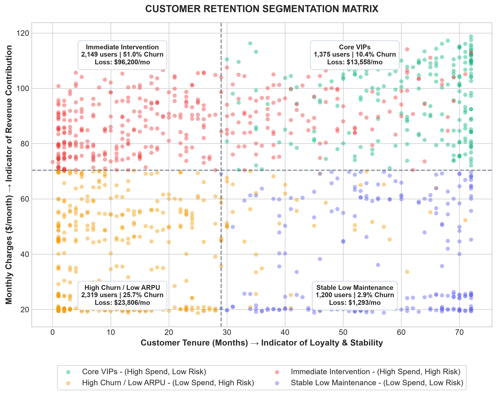
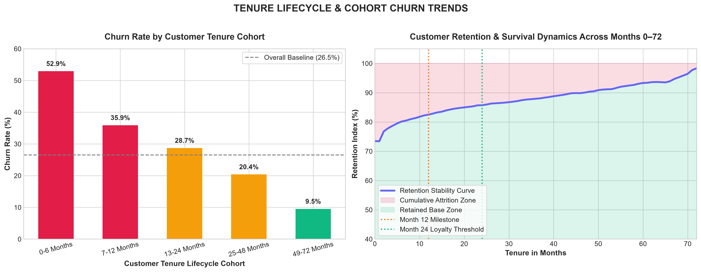
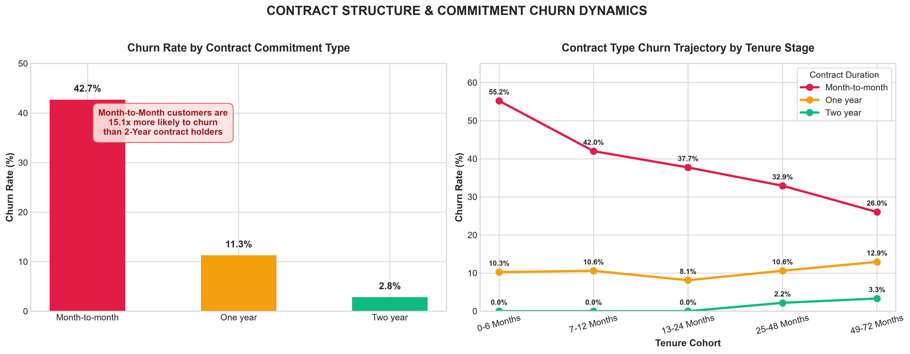
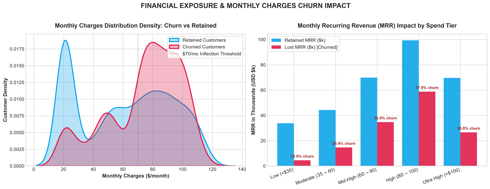
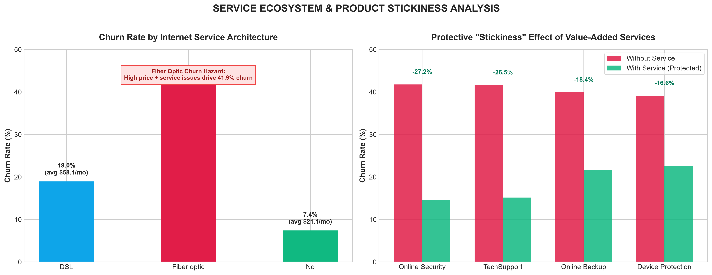
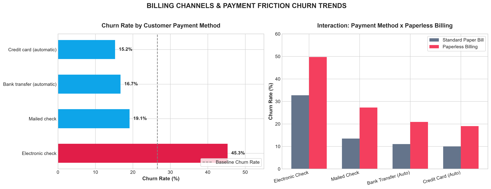

Comprehensive Diagnostic & Financial Exposure Intelligence on Telco Customer Base
Macro-level synthesis of customer attrition drivers, cash flow impact, and critical retention bottlenecks.

Over 41.9% of all lifetime churn occurs within the first 6 months. Customers enter without structured onboarding, face initial configuration friction, and exit before habituation can form.
3,875 accounts (55.0% of the customer base) operate on month-to-month contracts. This single group produces 88.5% ($110,642/mo) of all lost monthly recurring revenue.
Fiber Optic produces our highest monthly charges ($91.50/mo), yet suffers a 41.89% churn rate. Premium pricing without bundled proactive tech support produces extreme consumer sensitivity to outages.
Customers subscribed to Online Security and Tech Support exhibit an astonishing 63%+ relative drop in churn (down to ~14.6%–15.2%). Support services provide immediate issue remediation before frustration triggers cancellation.
Longitudinal attrition patterns illustrating the rapid drop-off in early months followed by long-term customer lock-in.

| Tenure Cohort | Accounts | Churned | Churn Rate | Avg MRR | Risk Tag |
|---|---|---|---|---|---|
| 0–6 Months | 1,481 | 784 | 52.94% | $54.74 | Critical Risk |
| 7–12 Months | 705 | 253 | 35.89% | $58.95 | Elevated Risk |
| 13–24 Months | 1,024 | 294 | 28.71% | $61.36 | Stabilizing |
| 25–48 Months | 1,594 | 325 | 20.39% | $65.93 | Loyal |
| 49–72 Months | 2,239 | 213 | 9.51% | $73.95 | Core Anchor |
Notice how customer value naturally expands over time: retained accounts at 49–72 months pay an average of $73.95/mo, compared to $54.74/mo in the initial cohort. Long-term customer retention directly powers portfolio ARPU expansion.
Comparing Month-to-Month flexibility with One-Year and Two-Year contractual commitment levels.

| Contract Type | Accounts | Churn Rate | Total MRR | Lost MRR / Mo | Multiplier |
|---|---|---|---|---|---|
| Month-to-month | 3,875 | 42.71% | $257,294.15 | $110,642.50 | 15.1x Baseline |
| One year | 1,473 | 11.27% | $95,816.60 | $10,812.35 | 4.0x Baseline |
| Two year | 1,695 | 2.83% | $103,005.85 | $2,914.80 | 1.0x (Reference) |
Even among older customers, Month-to-Month contracts remain fundamentally fragile. Structuring a low-friction incentive (e.g., $5/mo bill credit or free router upgrade) to transition M2M users into 1-year agreements is our most cost-effective lever to eradicate 70%+ of projected cancellations.
Evaluating churn concentration across price points and customer billing brackets.

| Monthly Charges Tier | Accounts | Churn % | Lost MRR ($) | Share of Lost Cash |
|---|---|---|---|---|
| Low (<$35) | 1,735 | 10.89% | $4,458.05 | 3.2% |
| Moderate ($35–$60) | 1,183 | 25.44% | $14,626.50 | 10.5% |
| Mid-High ($60–$80) | 1,459 | 32.42% | $34,696.95 | 24.9% |
| High ($80–$100) | 1,764 | 37.02% | $58,785.25 | 42.3% of Total |
| Ultra High (>$100) | 902 | 28.05% | $26,564.10 | 19.1% |
Retention budgets must not be allocated uniformly. Customers spending over $60/month drive $120,046 of our $139,130 monthly loss. Tiered retention perks should be targeted exclusively at accounts with Monthly Charges ≥ $70.
How technical architecture and auxiliary add-ons directly determine customer retention durability.

| Add-On Feature | Without Service | With Service | Absolute Cut | Relative Protection |
|---|---|---|---|---|
| Online Security | 41.77% | 14.61% | -27.16% | 65.0% safer |
| Tech Support | 41.64% | 15.17% | -26.47% | 63.6% safer |
| Online Backup | 39.93% | 21.53% | -18.40% | 46.1% safer |
| Device Protection | 39.13% | 22.50% | -16.63% | 42.5% safer |
Customers lacking security and tech support have an unbuffered, direct path to cancellation whenever any service disruption arises. Packaging free 6-month trials of Tech Support with new broadband signups will proactively collapse churn rates.
Payment channel vulnerability: Manual vs Automated transactions and Paperless invoice effects.

| Payment Channel | Total Accounts | Churn Rate | M2M Churn Rate | Risk Profile |
|---|---|---|---|---|
| Electronic Check | 2,365 | 45.29% | 53.73% | Critical Hazard |
| Mailed Check | 1,612 | 19.11% | 31.58% | Moderate |
| Bank Transfer (Auto) | 1,544 | 16.71% | 34.13% | Automated Anchor |
| Credit Card (Auto) | 1,522 | 15.24% | 32.78% | Lowest Churn |
Electronic check requires active monthly involvement and manual re-authorizations, creating 12 micro-decision cancellation opportunities per year. Automated billing converts payments into a passive background process, cutting churn by almost two-thirds.
2x2 strategic framework plotting customer accounts along Loyalty (Tenure) and Account Value (Monthly Charges).
2,130 accounts (44.8% churn rate). Produces ~$79,840/month in lost revenue. These are high-paying customers on month-to-month contracts and fiber optic lines. Immediate proactive outreach required.
1,386 accounts (13.9% churn rate). High lifetime value, long-term contract holders. Protect with dedicated VIP concierge support and proactive renewal terms 60 days before contract expiry.
1,745 accounts (34.2% churn rate). Price-sensitive entry-tier subscribers. Address through low-touch digital onboarding, self-service portals, and automated email nurturing.
1,782 accounts (6.8% churn rate). Minimal churn risk, highly satisfied low-touch accounts. Maintain baseline quality without disruptive pricing changes.
Prioritized business interventions mapped directly to empirical churn root causes.
Problem: 52.94% churn in months 0–6.
Prescription: Automatically bundle 90 days of complimentary Tech Support and Online Security for all new subscribers. Implement proactive automated health pings at Day 7, Day 21, and Day 45.
Financial Target: Recover $18,500/month ($222k/yr) by reducing first-year churn by 15%.
Problem: Month-to-month users represent 42.71% churn and $110.6k in lost MRR.
Prescription: Launch an automated campaign at month 4 offering a $5/month billing credit or permanent speed upgrade in exchange for signing a 12-month commitment.
Financial Target: Converting 20% of M2M users to annual contracts saves ~$22,100/month.
Problem: Electronic check churn is 45.29% compared to 15.24% on autopay credit cards.
Prescription: Offer a one-time $10 account credit for transitioning from manual electronic check to automated bank ACH or Credit Card.
Financial Target: Migrating 800 accounts saves ~$14,200/month in avoided churn.
Problem: 41.89% churn on Fiber Optic accounts despite generating $91.50/mo ARPU.
Prescription: Prioritize fiber support ticket queues, conduct automated line-quality diagnostics, and bundle free router replacement after 12 months.
Financial Target: Reducing Fiber churn to 30% saves $33,600/month ($403k/yr).
Model the financial upside of executing these retention initiatives across the customer portfolio: